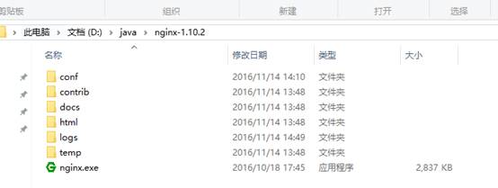

前端本地nginx反向代理说明
Tue, Nov 15, 2016背景
目前前端在和后端对接接口的时候，有2种方式，都是根据接口类型来分，第一种是后端是jsonp接口，前端在本地调试时直接能访问到,这种是方便前端开发的，但是对后端接口类型有要求,第二种是非jsonp接口，针对这种接口，对于前端来说就非常痛苦，前端需要在本地修改好代码后,上传到测试服务器，然后通过访问测试服务器地址来确定代码正确性，反复重复修改、上传、测试动作，开发效率不高，另外一个弊端就是前端需要些config文件，来配置我们后端的接口请求地址，如果前端工程师规范意识强一点，会通用到一个配置文件里，但是如果没有这方面的意识的话，就会出现代码里硬编码的情况，不利于服务器迁移，代码更新，接口变动等操作
目的
提高团队开发效率,并且防止硬编码的情况出现，方便以后服务器迁移，真正达到前后端分离，动静分开
组件
nginx-1.10.2
配置步骤
安装nginx
1、 nginx官网(http://nginx.org/en/download.html)下载nginx的windows安装包，这里下载的是zip压缩包，解压即可，解压目录父目录不要放在中文目录下，防止出现不必要的麻烦，不需要安装,解压之后，如下目录：

2、 修改nginx.conf配置文件，使用include命令引入项目配置conf文件，在conf文件夹下
引入vhost中的配置文件


在vhost中添加每个项目的配置文件，以.conf文件名结尾

3、 配置自己项目环境，代理端口、前端静态文件路径

4、 启动nginx
双击nginx.exe文件，这里主要注意点是添加配置，或者修改端口后，nginx重新运行也不起作用，这时候先停掉nginx程序，然后在启动，步骤：
1、 启动cmd窗口程序，停止
a) 
2、 启动nginx，直接运行或命令终端指向exe都可以的

5、 访问项目

前端代码
不需要使用jsonp模式，根据服务端接口给出的类型get or post 酌情使用

配置demo
server{
listen 8089;
server_name 127.0.0.1 localhost;
access_log logs/baotou_website.log;
charset utf-8;
location / {
proxy_passhttp://192.168.11.111:58080/;
proxy_redirectdefault;
}
location ~* ^.+.(ico|gif|jpg|jpeg|png|html)$ {
root D:/java/git/xinghc_wx/front/;
}
location ~* ^.+.(css|js|txt|xml|swf|wav)$ {
root D:/java/git/xinghc_wx/front/;
}
}